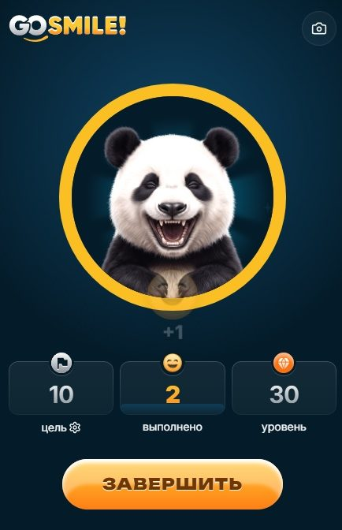
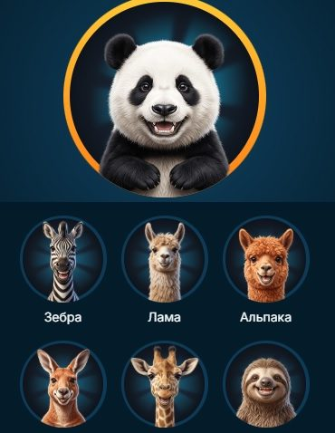
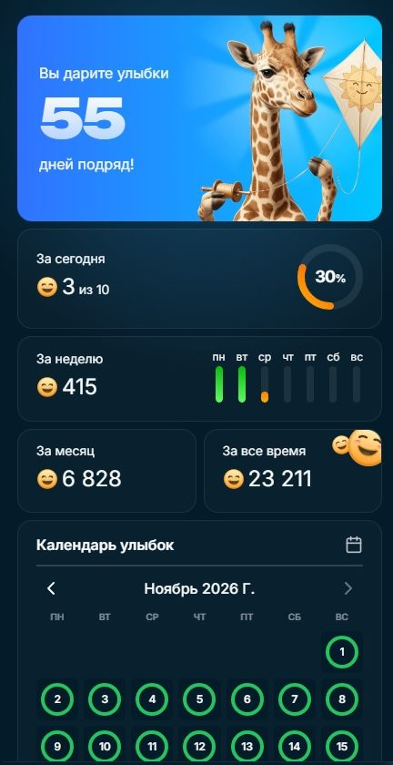
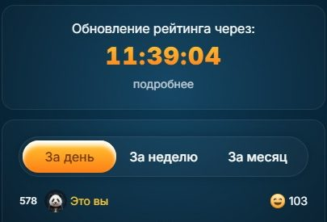
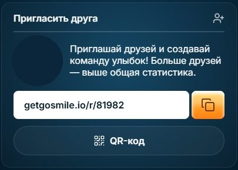

Как работает GO SMILE: приложение в скриншотах
GO SMILE — бесплатный трекер улыбок. Ниже — основные экраны приложения и коротко о том, что на них делать. Регистрация идёт по приглашению; актуальные условия — на сайте GO SMILE.
Скриншоты сделаны 25.11.2026. Интерфейс может меняться.
1. Главный экран
В центре — круг с персонажем. Под ним три плитки: цель на день, сколько уже выполнено и уровень. Ниже большая кнопка GO!, а внизу меню из четырёх значков: главная, статистика, рейтинг и команда. Блок «Как улыбается мир» показывает общие счётчики всех пользователей.

2. Нажмите GO!
После нажатия начинается подсчёт: на экране появляется «+1», а число в плитке «выполнено» растёт. Закончить можно кнопкой «Завершить».

3. Цель на день
Цель можно выбрать от 10 до 500 улыбок и менять в любое время. Для упражнения «200 улыбок» из методики Super Jump (около 20 минут) ставят 200. Если это много, начните с меньшего числа.
4. Персонаж или своё лицо
Если не хочется видеть себя на экране, выберите персонажа: панду, зебру, ламу, альпаку, кенгуру, жирафа, ленивца и других. Персонажи открываются по мере накопления улыбок.

5. Статистика
Во второй вкладке видно улыбки за день, неделю, месяц и год, серию дней подряд и календарь. Приложение показывает, сколько дней пропущено и сколько нужно наверстать.

6. Рейтинг
В третьей вкладке — рейтинг за день, неделю и месяц (до 50 человек). Он обновляется каждое утро по Гринвичу: на экране идёт обратный отсчёт до обновления. Вы видите своё место в списке. Имена других участников на скриншоте не показаны.

7. Команда
В четвёртой вкладке — ваша команда: кого вы пригласили и сколько кто смеялся, а также ваша ссылка-приглашение и QR-код. Человек, зарегистрировавшийся по ссылке, попадает в команду пригласившего. Если вы регистрируетесь по ссылке с этого сайта, вы окажетесь в команде автора сайта Матвея Харитонова, и он увидит вашу регистрацию в своём кабинете Super Jump. Какие данные видны и на каких условиях, написано в согласиях при регистрации.

Как добавить приложение на телефон
GO SMILE не нужно искать в магазине приложений: его добавляют на экран телефона из браузера. Пошаговые инструкции: Android и iPhone.
Идея практики
Идея простая: заметить хорошее, закрепить привычку улыбаться и каждый день уделять внимание себе. Приложение не лечит и не заменяет консультацию врача или психолога; результат не гарантируется. Актуальные условия — на сайте GO SMILE.
Открыть GO SMILE Написать «СМЕХ» в Telegram